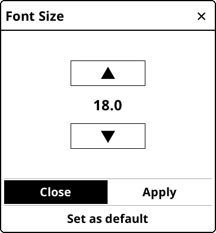

本指南中的部分文本根据不同类别标色：
绿色 ⇒ 菜单路径
紫色 ⇒ 外部应用程序和服务
青色 ⇒ 链接
我们在整个指南中还有用不同的方框来通知或警告您：
- 修复 bug 和实现新特性
- 将程序翻译成您的语言或改进现有的翻译
- 在论坛上用你的知识帮助别人
请查看有关 问题或建议 的链接部分。
指南最新更新： 2024-03-17
- 支持设备的 USB 大容量存储模式
- 云存储 (Dropbox/FTP/Webdav) 和相关账户
- KOReader 可以作为SSH服务器，因此您可以使用 SFTP 应用程序或文件管理器直接传输文件
- 使用Calibre插件，您可以通过 WiFI 将图书从Calibre 书库直接发送到您的 KOReader 设备
- 使用新闻下载插件，您可以将 RSS 和 Atom 新闻条目以 HTML 文件的形式下载到设备中
- 使用 Wallabag 插件，您可以从您的 Wallabag 帐户检索文章（基于服务器的稍后阅读服务，如Pocket）
- 手动或（如果您的设备支持）自动更改为横向方向
- 更改字体（包括您自己的），字体大小，对比度，粗细，字距，字间距，字宽
- 更改文本对齐，行间距，列布局和页边距
- 应用或忽略内置样式和字体
- 高亮显示不同样式的文本，放置书签
- 使用包括音调修饰符的可自定义键盘添加音符
- 反转屏幕颜色
- 截图
- 自动翻页
- 跟踪您的阅读统计数据，包括阅读进度, 时间范围和日历视图
- 强大的文件浏览器，您可以复制，移动，重命名，创建，删除文件和文件夹
- 可以使用详细信息和平铺等许多选项查看您的书籍
- 将您的书籍添加到收藏夹以便快速访问
- 历史显示上次打开的书籍
- 浏览小部件 可以让您在页面、章节、书签之间快速跳转
- 独特的书籍地图可以鸟瞰您的图书，包括您的所有笔记和标记
- 页面浏览 可以让您像电影胶片一样翻阅书籍
- 书签浏览r可以让您轻松浏览您的标记
- 自动或手动创建目录
- 隐藏和排除书中的某些部分，如附录、索引、参考文献等。
- 通过选择或输入文本(包括正则表达式)来搜索文档
- 在您的书签、标记和笔记中搜索
- 在 Wikipedia 或已安装的词典中查找文本，并通过长按来翻译它
- 一次性翻译整个页面为130多种语言
- KOReader 可以自我更新
- 强大的手势系统，您可以自定义和扩展手势
- 使用快速菜单创建包含您常用操作的菜单
- 在设定的时间间隔后调暗或关闭屏幕背光
- 手动或自动调整前光/背光级别和色温
- 从许多选项中设置您自己的屏幕保护程序，如随机图像、书籍封面、阅读、进度等。
- 设置电池充电限制警报以防止深度放电/过度充电
- 设置内存使用警报(适用于内存较小的设备),并在达到此限制时选择性地重新启动 KOReader
- 自动或手动裁剪页边距
- 重排文档以提取文本以便在小屏幕上更容易阅读
- 应用OCR
- 不同的缩放类型和页面方向可轻松阅读 多栏文档
- 自动校直倾斜文件
- 用于阅读漫画的特殊面板缩放功能
- 从剪贴板创建一个二维码
- 为书籍添加自己的CSS样式调整
- 查看EPUB文档中所选内容的HTML源代码
- 强大的配置文件功能，可自动执行操作
- 在您的设备上创建和编辑文本文件
- 打开终端模拟器并在设备上运行命令
- 查看您的CPU、内存和电池使用统计数据
- 将笔记和标注导出为文本、标记、HTML、JSON或Kindle剪辑格式
- 使用在线服务同步，如Joplin, Readwise, Memos, Flomo and XMNote
KOReader 有 2 个主要界面： 阅读屏幕 和 文件浏览器.


您可以设置 顶部菜单 区域，以便通过此菜单同时打开 顶部菜单和 底部菜单 ：
 → 点击和手势 → 激活菜单
→ 点击和手势 → 激活菜单
上一页 和 下一页区域还可同时使用 双击 手势。
如果只有一个项目可见，可以点击状态栏 区域在 状态栏 项目之间循环。 如果所有项目都可见，点击将显示和隐藏 状态栏。 查看"如何配置状态栏 ?" 获取更多信息。


下面将对图片中的圈点项目进行说明：
重置：此选项允许您重置文档的某些属性，如阅读进度、书签、自定义封面图像等，您可以在以下对话框中选择这些属性。
警告使用此对话框时要非常小心，并仔细检查标记了哪些项目，否则可能会意外重置所有内容。
打开方式：KOReader有不同的引擎来呈现不同的文件类型。在某些情况下，您可以在不同的引擎中打开文件以获取其他功能。请参阅下面的查看存档文件和查看图像文件部分。
忽略封面：如果出于某种原因，您想禁用这本书的封面（可能封面错误或封面在电子墨水屏幕上不太可读），您可以选择此选项。
忽略元数据：如果您的图书元数据不正确，名称字段可能会显示无用的信息。选择此选项以显示文件名而不是元数据。
刷新缓存的书籍信息：当您将书籍添加到库中时，KOReader会缓存书籍的元数据和书籍封面。如果您在复制到设备后对书籍进行了一些更改，则可能需要更新此信息。如果您看到错误的封面或元数据，可以使用此菜单项刷新书籍信息。
- 在文件浏览器中，长按文件名
- 点击打开方式...
- 点击存档查看器
- 在文件浏览器中，长按文件名
- 点击打开方式...
- 点击图像查看器
- 始终对此文件使用此引擎仅将此提供程序与此特定文件相关联
- 或者选中始终对文件类型使用此引擎，将此提供程序与具有与此相同扩展名的所有文件相关联。在同一对话框中，您可以通过点击 查看文件类型的默认值来查看您所做的关联。

- 文件浏览器 - 如上所述
- 收藏 -您可以在文件浏览器列表中长按书籍来添加书籍
- 历史 - 您打开的书籍列表
您可以从以下位置更改这些屏幕的外观：
→ 显示模式如果您想更改这些屏幕上显示的项目数量，请查看此处：
→ 设置 → 平铺和详细信息列表设置您可以为每个对话框分配手势。例如，在阅读一本书时，您可以通过手势访问您的历史或收藏文件浏览器。
您可以通过左上角汉堡菜单按钮的文件名或图书元数据在历史屏幕中搜索图书。
您还可以通过以下方式将KOReader设置为从收藏夹或History文件浏览器:
→ 主界面添加文件夹快捷方式
有两种方法可以将文件夹添加到文件夹快捷方式列表中：
- 当您在文件浏览器中时，点击右上角的+（加号）菜单按钮，然后点击添加到文件夹快捷方式 这将添加您当前所在的文件夹
- 在文件浏览器中，长按文件夹名称可打开上下文菜单。点击"添加到文件夹快捷方式"项，然后为此快捷方式输入一个描述性名称 这将添加您选择的文件夹
文件夹快捷方式列表中的文件夹将在文件浏览器中有一个星号（★）。
您可以以相同的方式从快捷方式中删除文件夹，方法是长按文件夹并选择从文件夹中删除快捷方式。
查看文件夹快捷方式
您可以在阅读书籍时从文件浏览器 或阅读屏幕 打开文件夹快捷方式。
- 从文件浏览器:右上角< span class="ui">+(加号)菜单，然后选择< span class="ui " >文件夹快捷方式或指定手势。
- 从阅读屏幕:通过向其分配手势。
它位于手势管理器的文件浏览器部分下。您可以在本指南的相关部分了解如何设置手势。
- 您可以通过以下方式更改界面语言： ⇑ 顶部菜单 → → 语言
- 如果您长按选项或菜单项（字体粗细，行间距等），您可以将其值设置为默认值。新的值将只适用于从现在开始打开的书籍。以前打开的书将保留其设置。您可以将默认值标识为菜单中的星号（★）或黑色边框，如下所示：


- 在底部菜单如果你长按一个选项的名称，你可以看到它的解释。
- 您可以向下滑动来关闭全屏对话框（历史，目录，书签，阅读统计等）
- 您可以用手指进行长对角线滑动来截图。此外，同时触摸屏幕对角也会截图。例如，在查看图像时，您可以使用第二种方式进行截图。
- 
在包含上述调整箭头按钮的对话框中，您可以点击并按住箭头按钮以更大的增量更改值。
您可以通过点击窗口外部关闭此类对话框（非全屏）。
通过按住窗口标题并拖动，可以移动此类对话框。
您可以通过点击并按住窗口标题使这种类型的对话框半透明（当您想在调整值时看到它下面的文本时）。
- KOReader支持在 EPUB 和扫描的 PDF/DJVU 文档中进行词典查找。只需点击并按住一个单词就可以查看字典定义或翻译。
- 按住一个单词会弹出一个对话框，您还可以在文档中搜索所选内容以查找更多出现的内容，或在维基百科上查找。
- 如果你想改变用户界面的大小，有一个DPI设置：
⇑ 顶部菜单 → → 屏幕 → 屏幕 DPI
您可以从菜单中选择一个值，或选择 自定义 DPI 输入一个值进行微调: 更高的 DPI = 更大的界面
注意，在底部栏中还有一个缩放(DPI)设置。那只和文件有关。您可以在下一节中找到解释。
- 如果用户界面出现黑闪（自动刷新部分屏幕以清除重影），您可以将其关闭：
⇑ 顶部菜单→ → 屏幕→ E-ink 设置
- 如果你想查看当前日期，你可以点击顶部菜单中的时钟。
 → 帮助 → 菜单搜索
→ 帮助 → 菜单搜索此外，您还可以将此功能分配给手势或将其添加到快速菜单以更快地访问。
→ 触摸和手势 → 滚动经典滚动：此模式的工作原理与您的手机/平板电脑滚动完全相同。
加速滚动：此模式允许您滚动比经典滚动更快。你也可以滚动几个页面，而不用抬起你的手指。滚动量与你开始滚动后移动手指的距离成正比。
释放时滚动：这种滚动类型更适合电子墨水屏幕。与其他滚动类型不同，此模式在滚动时不会连续刷新页面。它的工作方式类似于经典滚动，但不会显示中间步骤。所以，当你松开手指，页面就会跳到那个位置。如果您的书中包含图片或表格，并且您想查看所有内容，那么这对于重新定位和调整视图特别有用。
 → 返回到先前的位置 → 屏幕→ E-ink 设置 → 全刷频率 → 总是刷新带有图像的页面
→ 返回到先前的位置 → 屏幕→ E-ink 设置 → 全刷频率 → 总是刷新带有图像的页面有了这个新功能，当阅读EPUB文档时，通过仅呈现当前章节，可以更快地完成文本外观调整。
此外，由于这个特性，旋转屏幕方向现在快得多。默认启用该特性 。 如有必要，可以通过点击在本书上禁用或长按在全局禁用：
→ 文档 → 启用部分渲染使用部分渲染时，KOReade r和书籍将进入降级状态：您可以翻页，但某些信息和功能可能会被破坏或禁用（如页脚信息、目录、统计数据……）。为了恢复正常的工作状态，KOReader 还必须渲染书籍的其余部分。当发生这种情况时，屏幕左上角将出现指示状态的图标：
-
 文档已部分 呈现。页数、页脚信息和许多内容都不准确 。您可以查看新设置的外观并进一步调整。您还可以在这种状态下翻页、跳转链接。
文档已部分 呈现。页数、页脚信息和许多内容都不准确 。您可以查看新设置的外观并进一步调整。您还可以在这种状态下翻页、跳转链接。
-
 在后台中正在进行完整的渲染。您仍然可以翻页、跳转链接、更改设置。
在后台中正在进行完整的渲染。您仍然可以翻页、跳转链接、更改设置。
-
 完整渲染已完成，但尚未应用，因为KOReader正在等待您空闲以重新加载书本的其余部分（空闲=不与设备交互）。你仍然可以翻页，跳转链接，更改设置。
完整渲染已完成，但尚未应用，因为KOReader正在等待您空闲以重新加载书本的其余部分（空闲=不与设备交互）。你仍然可以翻页，跳转链接，更改设置。
-
 您已经空闲了一段时间，所以 KOReader 现在正在重新加载整个文档。在这个步骤中，KOReader 会屏蔽交互。
您已经空闲了一段时间，所以 KOReader 现在正在重新加载整个文档。在这个步骤中，KOReader 会屏蔽交互。

 → 页面重叠
→ 页面重叠缩放(DPI): 这个设置可以理解为文档的 一般缩放比例（字体大小除外）。在96 DPI（默认设置）下，文档中的图像以其原始尺寸呈现。基本上，如果您想使图像变大而不使文本变大，则使用此设置。

字间距: 一行文本中的 空格可以压缩多少以容纳更多单词。此设置不会影响单词，只会更改单词之间的间距。
字宽: I如果你一行中有太多的空白，那么通过扩展它们可以将多少空白分配到单词中。此设置会影响单词的外观。如果您不希望您的调整字宽，请将其设置为 无。
您可以尝试不同的设置，直到文本看起来令人满意，然后通过各自的对话框将它们设置为默认值。

+ 不改变字体宽度，书籍长度保持不变
+ 无需重新渲染文档，速度更快
- 在 LCD 或低 DPI 屏幕上可能看起来很糟糕
+如果安装了字体，将使用相应的字重
+ 在LCD或低DPI屏幕上看起来更好
- 必须重新渲染字体，速度较慢
字体微调根据屏幕的像素网格调整文本的最大可读性。常规使用字体的内部微调指令，自动使用 FreeType 的提示算法。自动是一个更安全的选择，因为您安装的字体文件可能有微调的提示说明。自动还可以更好地处理CJK文本。你可以尝试不同的设置，看看哪个更适合你的设备。
字体间距调整字母之间的间距，以达到视觉上悦目的效果。默认值为最佳，打开文件时可能较慢（取决于您的设备），但对连字符（见下图示例）、加入的阿拉伯文字形和一些其他脚本有更好的支持。如果您的设备运行速度较慢，您可以尝试使用 良好 ，它的运行速度更快，而且在使用西方拉丁文脚本文本时看起来仍然正确。

 →状态栏→ 副状态栏 → 样式调节
→状态栏→ 副状态栏 → 样式调节- 双列配置， 两列 小字体，横向和最小 边距
- 夜间模式 配置：更大的无衬线字体 和高对比 提供在弱光下更清晰的文字
- 禁用样式 配置： 对结构混乱的书籍禁用内嵌样式和内嵌字体
 → 配置文件 → 使用当前文件设置新建
→ 配置文件 → 使用当前文件设置新建- 您可以从 配置文件菜单应用配置文件
- 您可以为其指定一个手势
- 您可以在您的快捷菜单中显示它
请查看 手势、快速菜单和配置文件 章节获取更多信息。
- Y你可以更改字体*:⇑ 顶部菜单 → → 字体
- 让字体变大⇓ 顶部菜单 →

- 字体加粗⇓ 顶部菜单 →

- 反转屏幕颜色（黑底白字）⇑ 顶部菜单 → → 夜间模式
- 更改其他许多格式化选项⇑ 顶部菜单 → → 样式调节
您还可以通过 底部菜单更改其他格式化选项，对文本外观进行微调。
您可以通过以下方式查看您的阅读统计数据：
→ 阅读统计 → 前光 → 状态栏状态栏上可以显示很多项目。但默认情况下，一次只显示一个，你必须点击状态栏才能在它们之间切换。如果想同时显示所有项目，请启用此菜单项：
→ 状态栏 → 设置 → 同时显示您可以通过以下方式对项目进行排序：
→ 状态栏 → 设置 → 项目排序你可以通过手势或快捷菜单隐藏或显示状态栏：
还有一个副状态栏，可在可回流文档（epub、html、docx、rtf、txt......）中使用。如果您希望使用，可以通过以下方式启用：
→ 副状态栏使用 “自定义文本 ”项目对齐状态栏
有一个特殊的状态栏项目，名为自定义文本。该项目可在状态栏中显示您选择的文本。您可以使用此功能在状态栏项目之间创建分隔符。
- 首先在此菜单中点击该选项，启用该选项
⇑ 顶部菜单 → → 状态栏 → 自定义文本: ‘KOReader’
- 然后再次长按它，打开其设置。在第一个框中输入“空格”字符，在第二个框中输入重复次数，这将决定分隔线的宽度。
您可以选择其他字符作为分隔符。您还可以像移动其他状态栏项目一样移动此项目，以更改其顺序。
→ 屏幕 → 屏幕保护你可以将 JPG/PNG 文件用作屏保（适当抖动的灰度图像效果最佳）。将文件从电脑传输到设备上的任意文件夹。然后通过此菜单选择此文件夹作为屏保文件夹：
→ 屏幕 → 屏幕保护 → 设置有关屏幕保护程序图像的高级信息，请参阅本论坛帖子: https://www.mobileread.com/forums/showpost.php?p=3728291&postcount;=17
- 轻触输入框外侧关闭键盘，轻触输入框再次显示键盘
- 向上轻扫键盘，输入该字母的大写字母（如果已进入大写模式，则输入小写字母）。
- 您可以更改键盘的外观：
⇑ 顶部菜单 → → 设备 → 键盘 → 键盘设置
- 您可以选择多个布局：
⇑ TOP MENU → → Device → Keyboard → Keyboard layout
- You can change between your selected layouts by tapping the
 icon on the keyboard
icon on the keyboard

In addition to the long-press popup, you can also enter these extra characters by swiping on a key. In the example below, you can swipe up on the a key to enter an uppercase A or swipe other directions to enter the characters shown. Note that the example shown includes the full popup for demonstration. You don’t need to open this popup, you can directly swipe on the keys. Once you get used to the locations of the extra characters, you can enter them much quicker this way.
 If this feature interferes with your usage, you can disable it by unchecking:
→ Device → Keyboard → Swipe to input additional characters
If this feature interferes with your usage, you can disable it by unchecking:
→ Device → Keyboard → Swipe to input additional characters- Backspace - Deletes all characters from the cursor to the beginning of the line
- Left Arrow - Moves the cursor to the beginning of the line
- Right Arrow - Moves the cursor to the end of the line
For more information you can check the related wiki page:
https://github.com/koreader/koreader/wiki/Virtual-keyboard
KOReader also integrates the Chinese stroke keyboard for inputting simplified and traditional Chinese characters. You can find more info about it in our wiki:
This plugin comes enabled as default. If it is not in the menu, you can enable it via:
→ More tools → Auto Warmth and Night ModeYou can adjust the warmth of your screen frontlight automatically in two different ways:
FIXED SCHEDULE: In this mode your frontlight warmth changes according to the daily schedule you entered. This mode is STATIC, it doesn’t account for daylight length. The schedule stays the same all around the year.
SUN’S POSITION: This option calculates Sun’s position in your location according to COORDINATES and ALTITUDE information you entered. Frontlight warmth is adjusted gradually according to this calculated Sun position data. This mode is DYNAMIC. As the length of daylight changes around the year, plugin adjusts the schedule accordingly.
First have a look at this image to familiarize yourself with the terms used in the plugin:

- Go to the plugin menu: ⇑ TOP MENU → → Screen → Auto Warmth and Night Mode
- Tap Activate menu item and then ACCORDING TO THE FIXED SCHEDULE
- Go back to previous menu and tap FIXED SCHEDULE SETTINGS menu item
- Set your warmth transition schedule by setting times for various items here. Refer to the image above for an explanation of items.
- Go to the plugin menu:
⇑ TOP MENU → → Screen → Auto Warmth and Night Mode
- Tap ACTIVATE menu item and then ACCORDING TO THE SUN’S POSITION
- Go back to previous menu and tap LOCATION SETTINGS menu item. Set your coordinates (necessary) and altitude (optional) correctly and give a name to your location.
- Go back to previous menu and tap WARMTH AND NIGHT MODE SETTINGS menu item
- Set your warmth transition schedule by setting times for various items here. Refer to the image above for an explanation of items.
You can see your current schedule via CURRENTLY ACTIVE PARAMETERS menu option.

When you do this, a moon icon will appear in the menu next to this interval. To disable night mode, just disable the Night mode checkbox in that interval.

- Set the mode to Fixed schedule following the instructions above
- And adjust the settings similar to the image below:

As you can see in these settings above, there is only a one minute difference between day-night transition. So the screen warmth goes from 0 to 100 (or reverse) in only one minute. You can increase this time separation to make the transition duration longer.
https://github.com/koreader/koreader/wiki/Fonts
When starting up, KOReader compiles the available fonts from the font metadata/info and classifies them according to family and weights. This means you can add different weights and variants of a font and KOReader will try to use the most suitable one. Since it takes font family information from metadata, font names are not important when copying to your device. Installed fonts will be available after restarting KOReader.
Here are some example fonts that look good on an e-ink screen. You can find more of them on the Google Fonts website:
Serif:
- Spectral - https://fonts.google.com/specimen/Spectral
- Vollkorn - https://fonts.google.com/specimen/Vollkorn
Sans Serif:
- Wix Madefor Text - https://fonts.google.com/specimen/Wix+Madefor+Text
- Varela Round - https://fonts.google.com/specimen/Varela+Round
Monospace:
If you are planning to use your own monospace font, probably you already have a favorite one, so we are not offering any examples here. But you can find and compare many monospace fonts at this page: https://www.programmingfonts.org/
KOReader 可以生成一个文档，其中包含使用设备上安装的所有字体呈现的示例文本。这允许您快速比较非拉丁文字（如希腊文、希伯来文或中文）的字体（如连体）和字符集的外观和特性。您可以通过以下方式访问此功能：
→ 字体 → 字体设置 → 生成字体测试文档如果您的书中包含使用等宽字体的部分（如编程书籍），那么等宽字体可能看起来不成比例，即使它们在技术上是相同的大小。这是由不同的字体度量引起的。如果您想修复这个差异，KOReader 有一个选项，允许您调整等宽字体的相对大小。
→ 字体 → 字体设置 → 等宽字体缩放在这里，您可以通过调整其按默认大小的百分比缩放来增加或减少等宽字体的大小。
在基于HTML/CSS的文档（如epub）中，图书可以根据字体系列而不是特定的字体名称来指定使用字体。这些家族可以是衬线体，无衬线体，等宽字体，草书，梦幻，表情符号，仿宋和公式。例如，在一本书中，普通文本可以显示为无衬线体，而对话则显示为衬线体字体。KOReader通常对所有这些家族使用默认字体，除了等宽和公式（这由文本节点的样式决定，例如'font-family: serif'）。如果你想让这些家族看起来不同，你可以在这里为它们指定特定的字体：
→ 字体 → 字体族字体To change a family font for the current book just tap on the desired font name. If you want to set this for all your books, long-tap to set it as a Default (★). If a book abuses this font family feature to the point where your default font is hardly used, you can disable that family font for this book by unchecking the association.


Check the QUICK MENU AND PROFILES section of this guide to learn how to do this.
You can use the SKIM WIDGET, BOOK MAP or PAGE BROWSER features.
You can also open this widget with a long-tap on the Status Bar in addition to:
→ Skim document

If your document has too many heading levels, your chapter marks can look crowded like the example above. You can change the depth of visible ToC mark levels via:
→ Settings → Progress Bars
You can also use this reduced ToC for:
- chapter titles (if it is shown on Status Bar)
- chapter navigation
- reading time left estimates
These options are in the same menu.
If your document doesn’t have a Table of Contents, you can enable ALTERNATIVE TABLE OF CONTENTS. When this setting is enabled, KOReader will build a ToC from document headings (if available) or from individual HTML files in the EPUB. Long press on this menu item for extra info:
→ Settings → Alternative table of contentsYou can find more info about the table of contents tools available in KOReader in this relevant section of the guide: TABLE OF CONTENTS TOOLS
Additionally you can:
- See how much time you have spent on each page (if Reading Statistics plugin is enabled)
- Check which pages have bookmark, highlights and notes
- Navigate directly to any part of the book like the SKIM WIDGET
→ Book map
You can customize Book Map by changing these options:
- First try swiping LEFT and RIGHT along the bottom edge of the screen to change width of columns indicating pages and observe how it changes the scale of map
- Then try swiping UP and DOWN along the left edge of the screen to change chapter title depth and switch to the Flat View. See examples below.
In addition to default Grid View above, here you can see the Flat View on the left and Grid View without chapter titles on the right. Note the changing left vertical scrollbar between views. If you want to switch back to the default view, you can long-press the info icon at the upper left corner.


- About book map: Short explanation of Book map usage and icon descriptions.
- Available gestures: Gestures you can use to change the settings of Book map instead of using this menu.
- Page browser on tap: If this is checked, when you tap on a page in Book map, Page browser opens. This shows you an overview of the area you selected. If you disable this option, a tap in Book map directly takes you to that page. But remember, depending on factors like your screen size, touch screen sensitivity, tap accuracy etc. you might end up in adjacent pages.
- Switch current/initial views: If you customized your Book map view, tapping this switches between the default view and your customized view.
- Switch grid/flat views: Switch between separate chapters or continuous chapters views.
- Chapter levels: Change the depth of chapter/sub chapter levels.
- Page slot width: Make each page slot wider or narrower.
- 10-page markers: As you increase this value, first it will add markers to every 10th page, then it will make them bigger and eventually it will add markers to every 5th page.
→ Page browserYou can change the number of pages shown by swiping along the TOP and LEFT sides of screen. Icons on the bottom are the same as Book Map. Actually the bottom part is a linear version of the Book Map.

- No ToC in the book, so you can’t jump between the chapters or see the remaining reading times
- There is a ToC but it is not very useful because it has wrong or missing chapter titles
KOReader has some features that you can use when reading books with a problematic table of contents section.
Note that Alternative table of contents is not available on fixed layout documents like PDF, DJVU etc. because it requires HTML tags to create a ToC. Custom table of contents and Custom hidden flows features are available on all file types.
→ Settings → Alternative table of contentsAlternative table of contents tries to create a ToC from the headings in your book (H1 to H6 tags in the HTML files in your EPUB). If your book doesn’t contain any headings, it will try to build a ToC from the document fragments (individual HTML files in your EPUB book) which will point to the beginning of each file.
You can choose which heading levels to include (or ignore) in your ToC from this menu:
→ Style tweaks → Miscellaneous → Alternative ToC hints → Settings → Custom table of contentsOnce you enable this feature, new menu items will be added to the user interface which allows you to select your chapters. You can add a chapter to your ToC from two places:
- From a highlight: While reading a book, select a text like you are highlighting it or long press on a word. In the popup menu you will see the Start TOC chapter item. When you press on it, you will see a dialog asking you to enter your chapter title. The text you selected will be already entered in the dialog. Edit your title if necessary and press create.
- From the Page browser: Open the Page browser via
→ Page browserLong press on the page thumbnail that you want to be the beginning of your chapter and select Start TOC chapter item from the popup menu. You will see a dialog asking you to enter your chapter title.
When you are done creating your ToC and don’t want to see these extra buttons, you can disable them by unchecking:
→ Settings → Custom layout features → Edit modeCreating this ToC will not alter your original ToC which comes with your book. You can clear your Custom table of contents from this same menu (in case you want to create a new one). And you can disable this feature completely in the same way you enabled it, if you want to return to the original ToC. Note that if you disable this feature after creating a custom ToC to return to the original one, your custom ToC will not be deleted. You can still switch between the original and your custom ToC.
Have a look at the image for an overview of the process. Steps will be explained after the image:

How to exclude a section by creating a hidden flow
- Go to the first page of the section you want to exclude
- Open the Page browser via:
⇑ TOP MENU → → Page browser
- Long press on the page thumbnail that you want to be the beginning of your excluded section and select Start hidden flow here item from the popup menu.
- You will see that the pages starting from your selection now have a gray hatched background.
- Now go to the last page of your excluded section. You can navigate there from the Page browser or using other ways like Book map, Skim widget etc.
- Once you are at the last page of your excluded section, open the Page browser again (if you are not already in it).
- Find the last page of your hidden section and long press on the next page. Choose Restart regular flow here from the popup menu. You will see that the background of the remaining pages will return to normal color, indicating the end of hidden flow and the beginning of regular flow.
Working with the hidden sections
When you create a hidden flow section as described above, KOReader’s behavior will be similar to the situation as if you removed a section of a paper book by cutting it out:
- These hidden flow sections will be skipped when turning pages. For example assume that you created a hidden flow for Chapter 10. Now you are on the last page of Chapter 9. When you turn the page, you will see Chapter 11.
- Page numbering will continue as if these hidden flow sections do not exist.
- These hidden sections will not be shown in your Progress bar (but read the explanation below) and will not be considered in time to read calculations. But they will still be visible in the Skim widget.
- Following direct links to the pages included in these hidden flow sections will still work. Also you can still reach these sections from the Table of contents, Book map, Page browser, Skim widget.
As we said above, your hidden flows will be excluded from your Progress bar. But if you jump to one of your hidden sections using any of the methods mentioned above, your Progress bar temporarily becomes this hidden section’s progress bar. You can imagine this as the progress bar is zooming into that hidden flow section. If you exit out of this hidden section by turning the page at the end of it, or using other navigation tools, your Progress bar will go back to showing the whole book again (with your custom hidden flows again not visible).
Removing and cleaning up hidden sections
You can remove individual hidden flow sections from the Page browser in the same way you created them. You can also clear all of them at once with the menu item:
→ Settings → Custom layout features → Clear all marked pagesAs you work on creating hidden flows by tagging pages as Start hidden flow or Restart regular flow, some of the previously made ones may stop having an effect. For example in the case that you make Start hidden flow a few pages before an existing Start hidden flow, that existing one is no longer involved. This overlapping or obsolete tags are remembered for practical purposes. Again in the previous example, if you end that second hidden flow before the existing-but-no-longer-involved Start hidden flow, this deactive one will be involved again. You can clear all these inactive markers if they interfere with your custom flows, or once you finish making your hidden flows and happy with the results:
→ Settings → Custom layout features → Clear inactive marked pagesHidden sections and progress bar
As we said above, your hidden flows will be excluded from your Progress bar. But if you jump to one of your hidden sections using any of the methods mentioned above, your Progress bar temporarily becomes this hidden section’s progress bar. You can imagine this like the progress bar is zooming into that hidden flow section. If you exit out of this hidden section by turning the page at the end of it, or using other navigation tools, your Progress bar will go back to showing the whole book again (with your custom hidden flows again not visible).
Bookmarks: You can add (and remove) a bookmark by pressing the upper right corner. This is the equivalent of folding the corner of a page on a real book and shows a similar icon when you enable it.
Highlights: You can highlight text in 4 different styles. In the image below, you can see a normal paragraph followed by different styles of highlights. Lighten (with gray background), Underline, Strikeout and Invert.

You can use all these styles at the same time, like they are different colored highlight markers. Or you can decide your favorite style and set it as default from this menu by long pressing:
→ Highlight styleNotes: You can also add notes to your highlights. Just tap on a highlight and choose Add note from the popup menu. You can also choose a Note marker that shows which highlights contain a note. There are three styles: Underline, Side line and Side mark (which is the pencil icon shown on the right side of the picture below):
 To enable this feature and choose a Note marker style, go to:
→ Highlight style → Note marker
To enable this feature and choose a Note marker style, go to:
→ Highlight style → Note markerNormal mode is similar to selecting a text with your finger on a phone/tablet and more suitable if your highlights are shorter than one page.
Select and highlight mode is more suitable for highlighting longer passages which cross page boundaries. It might also work better if you have touch screen sensitivity problems or motor control issues with your hands. Because in this highlight mode you don’t need to drag your finger along the screen.
- Long-press on the starting word
- Move your finger to the end of the passage
- Release finger
When you reach page boundaries, KOReader will turn the page for you to continue highlighting (only in EPUB/HTML documents). You can disable this feature from:
→ Taps and gestures → Long-press on text → Auto-scroll when selection reaches a corner → Taps and gestures → Long-press on text → Dictionary on single word selection
- Long-press (or drag if dictionary lookup is enabled as described above) on the starting word, popup menu will show up.
- Tap on Select, now you are in highlighting mode. When you are in this mode, you will see an indicator at the upper left corner of the screen (which you can tap on it to get more information). You can cancel highlighting by tapping on the beginning of highlight again. You can turn pages with taps/swipes and freely navigate the document (TOC, skim etc) in this mode.
- Long-press (or drag if dictionary lookup is enabled as described above) on the ending word for your highlight, menu will show up again.
- Tap Highlight this time to finish highlighting the passage.
This dialog normally opens at the center of the screen. If you want this dialog to open closer to your highlight location, you can change the center option here to gesture position (located on the second page of this menu):
→ Taps and Gestures → Long-press on text → Highlight dialog position → Taps and gestures → Long-press on text → Select and highlight → Highlight styleBut if you start highlighting from the middle of a sentence, period at the end will not be included because KOReader assumes that you want to make a partial highlight. So if you want the punctuation marks to be added to your highlight, be sure that you select the whole sentence. Also you can add these marks later by long pressing the Highlight edit buttons.
When you tap on an already highlighted text (without a note), you will see this popup menu. Delete and Add note items are clear. Bottom row menu items are used to extend or shrink the highlight.

When you tap on an already highlighted text with a note added, you will see this popup menu. Tap on Edit highlight to open the menu above where you can edit both the highlight and the contained note:

On your Bookmarks page you can filter the view to see only one type of bookmark by pressing the menu icon ( ) You can also filter by highlight style:

- Move to archive plugin menu
- With a gesture or
- With a Quick Menu entry
Local export: You can export your highlights to your device in these file formats:
- Text (.txt)
- HTML (.html)
- Markdown (.md)
- Kindle Clippings (.txt)
- JSON (.json)
You can choose your preferred export formats from:
→ Export Highlights → Choose formats and servicesYou can see the export location (and also change it if you want):
→ Export Highlights → Choose export folderOnline services: You can also export to these services over the network:
- Joplin (a note taking application) - https://joplinapp.org/
- Readwise (an online bookmarks/highlights application) - https://readwise.io/
- Memos (a self-hosted open source memo hub) - https://github.com/usememos/memos
- Flomo (an online note taking service) - https://flomoapp.com
- XMNote (an Android bookmark organizer in Chinese language) - https://www.xmnote.com/
You can find detailed setup instructions for these services on our related wiki page: https://github.com/koreader/koreader/wiki/Highlight-export
After selecting your formats, you can export the notes for the current book or all the books in your library from the same plugin menu.
If you want to export only some of the books in your library, you can do this from the File Browser:
- Select multiple books in the File Browser
- Tap on the menu button (shown as a check mark) at the top right corner
- Select Export highlights from the menu shown
→ ReflowReflow tries to extract the text portion from your document (if it is available) and format it as a single column. Results are generally satisfactory. You can also set this as DEFAULT by tapping and holding on it.
 →
→ 

With this option KOReader tries to crop margins from your document so text may look bigger on your screen. You can set FIT to WIDTH in the same menu which will try to fit only page width instead of whole page, so your text will look bigger.
This will make your screen wider so your document may look big enough to read comfortably.

This is especially helpful with comic books. First enable COLUMN MODE from this menu item:
→ 
Then select an appropriate flow direction for your document from the same menu:

- For example if you are reading an article which has two columns, you will scroll down until the end of page reading left column then go to right upper side to continue reading right column:

- Or if you are reading a comic book, you will want to go "right → down left → right" in a zigzag pattern:

- For a Japanese comic book (right-to-left panel order) this might be the reverse:

In this mode you can also adjust Horizontal/Vertical Overlap and Number of Columns from the same menu to fit the text on your screen better. Feel free to experiment with these settings.

CONTRAST This setting adjusts black levels in your document. Be aware that same contrast value applies to both text and images in your document. If you set it very high, your images may become too dark to be readable.
DEWATERMARK Removes watermarks from the rendered document. It can also be used to remove gray backgrounds. This feature can convert a grayscale or color document to black & white to produce more contrast for easier reading.
RENDER QUALITY (REFLOW MODE) Sets the quality of text and image extraction processing and output. HIGH is more pleasing but it can be much slower (several seconds for page turn) than DEFAULT depending on your document. If your PDF/DJVU files are slow, this is the first setting you should check.

DOCUMENT LANGUAGE Sets the language to be used by the OCR engine.
FORCED OCR Force the use of OCR even if the document has a text layer
WRITING DIRECTION (REFLOW MODE) Text direction of original document. Set to RTL for languages like Arabic and Hebrew.
DOCUMENT COLUMNS (REFLOW MODE) Number of text columns in the original document.

AUTO STRAIGHTEN feature can straighten the pages of a problematic document, for example pages of a PDF which are scanned with an angle. It is available in PDF, DJVU, CBZ/CBT documents and image files. To enable, choose the maximum tilt angle which KOReader will try to correct. If it doesn’t correct you might have to choose a bigger angle. Note that this feature might slow down your reader depending on several factors.
In order to use this feature you need to:
- Install Tesseract language data to your KOReader
- Add newly installed languages to koreader/defaults.lua configuration file (necessary only if your language is other than English or Chinese)
→ Panel Zoom (manga/comic)When this option is enabled, KOReader tries to find the boundaries of rectangular panels on the screen. If you long-tap on a panel, KOReader zooms in to that panel. As you can guess, this feature works best with comics that has clean panel boundaries. Procedure can be seen below:

If you want to use this feature with other file types like EPUB, FB2, HTML or image files, you should open the file with a different engine: In the File Browser long-tap on the file name, tap Open with… and select MuPDF.
KOReader can reflow PDF documents (this option can be found in the bottom menu while reading a fixed-layout document like PDF) to make them suitable for the small screens of e-readers. But for best results, you may want to convert your documents into more flexible EPUB format. You can use Calibre (https://calibre-ebook.com/) for all kinds of conversion between formats.
There are many ways to transfer your documents to your device. Note that you may need to restart KOReader to index the transferred documents (or refresh directory if you have Pocketbook/Android).
In addition to transferring files the same way you would with the built-in reader application, other options are available depending on your device:
- USB mass storage mode within KOReader: This mode is available for KOBO and some CERVANTES devices.
- Cloud storage (Dropbox/FTP/Webdav): To use this function you have to add accounts for a cloud storage server via menu shown below. Process is explained via INFO buttons while adding accounts:
⇑ TOP MENU (in File Browser) → → Cloud storage
- SSH/SFTP access: KOReader can act like an SSH server, which you can access from a computer to transfer files (available on Kobo, Kindle, Cervantes). You can use an SFTP application (like Filezilla) or access via your file manager if your operating system supports. Check wiki for how-to: https://github.com/koreader/koreader/wiki/SSH
- Calibre transfer: With the Calibre plugin you can send documents from your Calibre Library directly to your KOReader devices via a wifi connection. Check wiki for how-to: https://github.com/koreader/koreader/wiki/Calibre-wireless-connection
- News downloader: With this plugin you can download RSS and Atom news entries as HTML files. Check wiki for how-to: https://github.com/koreader/koreader/wiki/News-downloader
- Wallabag: With this plugin you can retrieve articles from Wallabag, a server based read-it-later service like Pocket. Check wiki page for more info: https://github.com/koreader/koreader/wiki/Wallabag
In situations like this you can quickly take a screenshot and set it as the current book’s cover. Screenshot gesture is a long diagonal swipe by default. Also touching opposing diagonal corners will take a screenshot. You can use this second shortcut when viewing an image. After taking your screenshot you can select Set as book cover from the dialog.
You can remove this custom book cover here:
→ Book informationOn the book information page, long-press on the Cover image item and then select Reset custom.
You can also reset the book cover with the Reset dialog, which you can access by long-pressing the filename in the File Browser.
Calibre can convert your documents between many formats. It also has a built-in editor that allows you to edit e-books (and fix problems) in the most popular e-book formats, EPUB and Kindle. https://calibre-ebook.com/
K2pdfopt optimizes PDF/DJVU files for mobile e-readers and smartphones. It works well on multi-column PDF/DJVU files and can re-flow text even on scanned PDF files. It can also be used as a general PDF copying/cropping/re-sizing/OCR-ing manipulation tool. https://www.willus.com/k2pdfopt/
OCRmyPDF is a command line application which can add an OCR text layer to scanned PDF files (containing only images without text), allowing them to be searched or copy-pasted. It can especially be useful for reading old scanned books. It can also optimize the images for a smaller file size. https://github.com/ocrmypdf/OCRmyPDF
SingleFile is a browser extension for Mozilla Firefox, Google Chrome and Microsoft Edge. This extension allows saving a web page as a single .html file with all resources (images, stylesheets, scripts) embedded. https://github.com/gildas-lormeau/SingleFile#install
DEFAULT CASE: yourfilename.zip - Assumed to be a zip file of images (and opened by MuPDF engine)
If your zip file contains one of these types (instead of just images), please name it accordingly:
- FictionBook - yourfilename.fb2.zip
- HTML - yourfilename.htm.zip / yourfilename.html.zip
- Text log files - yourfilename.log.zip
- Markdown - yourfilename.md.zip
- Rich Text Format - yourfilename.rtf.zip
- Plain text - yourfilename.txt.zip
If the documents are not named like this, the wrong reader/format engine is likely to be used and you will see the No reader engine for this file or invalid file message. You can rename this file as explained above or long-press the filename and then choose Open with... to select the correct engine.
File types like MOBI and EPUB are not suitable for handling primarily image content (e.g., manga/comics). MOBI support in KOReader is minimal to nonexistent, and EPUB’s text rendering priorities can cause problems when showing full-page images. For further technical details:
https://github.com/koreader/koreader/issues/9163#issuecomment-1146637205).
Your best option is building a CBZ file which works better in KOReader. A file with .cbz extension is a zip file (with no compression) that is a collection of images. It saves multiple images, commonly .png or .jpeg files, organized into pages of the comic. KOReader can also open CBT files, which are similar to CBZ files but use TAR archive format.
Easiest way to convert a manga to CBZ is to get the manga as images from various websites, then convert them using Kindle Comic Converter (https://github.com/ciromattia/kcc). There are some useful settings like auto-rotating two-page splits to landscape and applying dithering so that eink-rendered gradients are smoothly dithered without jagged layers.
The best results can be achieved by resizing your images to exactly your e-reader screen size. A screen-specific CBZ which targets the exact screen size of the device, prevents rescaling during reading. KOReader downscales your images to your screen size while reading but this is not recommended because KOReader adds a dithering pass before scaling and this causes loss of quality.
But if you want to use your hand made CBZ on more than one device or you want to preserve high resolution for future proofing, your best option might be to make the CBZ for your highest resolution device. Or pick an arbitrary "high" resolution, possibly one that matches the source. 300 PPI or better (up to 450 or even 600), unless the source is lower of course. If we assume a screen size of 8", 1500×2000 is a good target resolution. For bigger images, you should try it on your device and see whether it can deal with it. Especially old Kindles with low memory can struggle with sizes like 3000×4000 for example. If you're automating the process, it might be worth considering creating both a lower and higher quality version (e.g., at 200/400 or 300/600 DPI).
→ Taps and gestures → Page turns → Invert page turn tap and swipes / buttons- Download Kindle Comic Converter (KCC) from https://github.com/ciromattia/kcc
- Download your manga from the source of your choosing (i.e. HakuNeko)
- Unpack the manga file. Now you should have a directory that contains only images (or subdirectories with images, no archives)
- Process this directory with KCC. Each directory will produce a single CBZ file, so if you want to make several volumes at once, select multiple directories at once
Some useful settings of KCC:
Spread splitter: This feature detects double pages and allows you to rotate or cut them in two.
Upscaling: Enlarge images that is smaller than your target resolution.
You can use ImageMagick to process your images. ImageMagick, is a powerful open-source software suite for displaying, creating, converting, modifying, and editing raster images. You can download ImageMagick and use it from the command line to process many images at once.
- Unpack the prepared CBZ file that you created with KCC,
- Download the following file (dither_pack.zip) which contains two batch files (.BAT) and a GIF color template: https://disk.yandex.com/d/glEebjmPYYp7og
- Extract these three files next to your images that will be processed
- Edit the _magick_manga_ditherN_resize.bat and change the resolution to your device resolution (in both places in the BAT file).
WARNING Next step will replace all the images in the directory with the processed ones. So make sure that you have a copy of them in some other directory if you want to keep the originals.
- Run _magick_manga_ditherN_resize.bat to resize and dither the images.
- Assuming you have 7-Zip installed, run _batch_archive.bat to pack all the processed images into a CBZ archive.
["/storage/emulated/0/Books/manga"] = {
["inverse_reading_order"] = true,
["kopt_zoom_direction"] = 0,
},
where /storage/emulated/0/Books/manga is the absolute path to the directory containing your mangas. After this change, when you open a file from the mentioned directory, your swipes and tap zones will be swapped.

When opening this next file, KOReader skips the files that you have marked as finished. This feature is useful for example when you have a folder of manga files and you have already read some of them. You can mark a file as finished from the end of book dialog shown above. Also you can mark it from the File Browser by long-pressing on the file. After copying them to your device, you can:
- Open the File Browser in KOReader
- Long press on the ones you already finished and tap Mark as finished
Now you can read all the files by just tapping Open next file at the end of the book. KOReader will skip the ones you have already read.

TAP / DOUBLE TAP
Single or double tap with ONE finger
WORKS: Anywhere on the screen

TAP AND HOLD
Single tap and hold with ONE finger
WORKS: Only on four corners

TWO FINGER TAP
Single tap with TWO fingers at the same time
WORKS: Only on four corners

SPREAD AND PINCH
Same gesture as zooming in and out on a mobile phone, tablet etc.
WORKS: Anywhere on the screen

ONE FINGER SWIPE
Swiping motion with ONE finger
WORKS: Screen edges (HORIZONTAL and VERTICAL) Anywhere except edges (DIAGONAL)

TWO FINGER SWIPE
Swiping motion with TWO fingers at the same time
WORKS: Anywhere on the screen

MULTISWIPE
More than one swipe done after each other without lifting your finger. For example like drawing the letter U (DOWN-RIGHT-UP)
WORKS: Anywhere on the screen
Icons by Econceptive from the Noun Project
→ Gesture Manager- Top Left Corner > Toggle page flipping
- Top Right Corner > Toggle bookmark
- Opposing diagonal corners at the same time > Take screenshot
- Left Side > Go -10 pages
- Right Side > Go +10 pages
- Short diagonal swipe > Full screen refresh
- Long diagonal swipe > Take screenshot
- ← → - Back to previous location
- → ← - Go to latest bookmark
- ↓ ↑ - Skim document
- ↑ ← - Bookmarks
- ↑ → - Table of contents
- ↓ ← - Show frontlight dialog
- ↓ → - Toggle reflow
- → ↑ - History
- ← ↑ - Book status
- → ↓ - Go to page
- ← ↓ - Back
- ↑ ↓ ↑ - Previous chapter
- ↓ ↑ ↓ - Next chapter
- ← → ← - Open previous document
- → ← → - Favorites
- 阅读进度
- Open previous document
- History
- History search
- 收藏
- File browser
- Dictionary lookup
- Wikipedia lookup
- Show menu
- 菜单搜索
- Screenshot
- Toggle SSH server
- Show ephemeris
- Statistics calendar view
- Statistics today’s timeline
- 同步书籍统计
- Exit screensaver
- Start USB storage
- Suspend
- Restart KOReader
- Reboot the device
- Power off
- Exit KOReader
- Toggle hold corners
- Enable touch input
- Disable touch input
- Toggle touch input
- Invert page turn buttons
- Toggle key repeat
- Toggle accelerometer
- Rotation
- Toggle orientation
- Invert rotation
- Rotate by 90 CW
- Rotate by 90 CCW
- Turn on Wi-Fi
- Turn off Wi-Fi
- Toggle Wi-Fi
- Show network info
- Battery statistics
- 系统统计
- Show frontlight dialog
- Toggle frontlight
- Set frontlight brightness
- Increase frontlight brightness
- Decrease frontlight brightness
- Set frontlight warmth
- Increase frontlight warmth
- Decrease frontlight warmth
- Toggle night mode
- 设置夜间模式
- Full screen refresh
- Full refresh rate (always)
- Full refresh rate (not in night mode)
- Full refresh rate (in night mode)
- Always flash on chapter boundaries
- Toggle flashing on chapter boundaries
- Never flash on chapter's 2nd page
- Toggle flashing on chapter's 2nd page
- Always flash on pages with images
- Toggle flashing on pages with images
- 自动色温关闭
- Auto warmth cycle through modes
- Set font
- 增大字体大小
- 减小字体大小
- Set font size
- Word spacing
- 字母间隙
- Contrast
- Font weight
- Font hinting
- Font kerning
- Two columns
- L/R margins
- Sync T/B margins
- Top margin
- Bottom margin
- View mode (page-continuous)
- Render mode
- Zoom
- Line spacing
- Alt status bar
- Embedded style
- Embedded fonts
- Image scaling
- Invert images
- Folder up
- Show plus menu
- Toggle select mode
- 刷新内容
- 文件夹快捷方式
- File search
- Go to page
- Back
- Open next document in folder
- Show bottom menu
- Toggle status bar
- Previous chapter
- Next chapter
- 首页
- 尾页
- Turn pages
- Go to page
- Skim document
- Previous bookmark
- Next bookmark
- First bookmark
- Last bookmark
- Latest bookmark
- Back
- 转到上个位置
- 转到下个位置
- Follow nearest link
- Follow nearest internal link
- Add current location to history
- Clear location history
- Fulltext search
- Table of contents
- Book map
- Book map (overview)
- 页面浏览
- Bookmarks
- Bookmark search
- 切换书签
- Book status
- Book information
- Book description
- Book cover
- 翻译本页
- 切换翻页方向
- 切换自定义目录
- 切换自定义隐藏流
- 设置标注动作
- 循环标注动作
- Cycle highlight style
- Save book metadata
- Move current book to archive
- Book statistics
- Toggle page flipping
- Toggle bookmark flipping
- Toggle reflow
- Zoom mode
- 更改缩放比例
- 切换面板缩放
- Page crop
- Margin
- Horizontal overlap
- Vertical overlap
- Fit
- 缩放比例
- Zoom to
- Direction
- View mode
- Page gap
- Progress bar
- Line spacing
- 对齐方式
- Font size (set)
- Font size (inc/dec)
- Word gap
- Reflow
- Contrast
- Dewatermark
- Dithering on-off
- Render quality
- Document language
- Forced OCR
- Writing direction
- Auto straighten
- Document columns
- Open top menu - F1
- Navigate to home - Home
- Navigate file list - Up/Down
- Open selected book - Enter
- Show selected book’s context menu - Right
- Exit application - Esc
- Open selected page link / Open bottom menu - Enter
- Open top menu - F1
- Back/exit application - Esc
- Show bookmarks - B
- Show TOC menu - T
- Enter highlighting mode - H
- Start/stop highlight selection - Enter
- Move highlight indicator - Left/Right/Up/Down
- Move highlight indicator faster - Shift+Left/Right/Up/Down
- Exit highlight mode - Esc
- Show font menu - F
- Increase font size - Shift+Page Up
- Decrease font size - Shift+Page Down
- Select next page link - Tab
- Select previous page link - Shift+Tab
- Zoom in - Page Down
- Zoom out - Page Up
- Next/previous page/view - Left-Right / Up-Down / Page Up-Page Down
- Go to the beginning of book - 1
- Go to 11% of book - 2
- Go to 22% of book - 3
- Go to 33% of book - 4
- Go to 44% of book - 5
- Go to 55% of book - 6
- Go to 66% of book - 7
- Go to 77% of book - 8
- Go to 88% of book - 9
- Go to the end of book - 0
- Go to the beginning of book - Q
- Go to 11% of book - W
- Go to 22% of book - E
- Go to 33% of book - R
- Go to 44% of book - T
- Go to 55% of book - Y
- Go to 66% of book - U
- Go to 77% of book - I
- Go to 88% of book - O
- Go to the end of book - P
- Zoom in - Shift + PgUp
- Zoom out - Shift + PgDown
- Zoom to fit page - A
- Zoom to fit page width - S
- Zoom to fit page height - D
- Zoom to fit content - Shift+A
- Zoom to fit content width - Shift+S
- Zoom to fit content height - Shift+D
- Manual zoom mode - Shift+M
Basically, any action you can assign a gesture can be added to the Quick Menu. Its advantages are:
- You don’t need to memorize lots of gestures for every action.
- Some infrequent actions may not worth a gesture but it can be too much hassle to find it in the menu system. You can add this kind of rarely used actions to this menu instead.
- If you are installing KOReader for a relative or friend, you can add their favorite actions to this menu so they don’t even need to go into the menu system while using KOReader.
An example Quick Menu:

There are two methods for creating a Quick Menu. Easy and Advanced. If you need only one menu, Easy method should be enough for you. If you want show different menus with different gestures you need to use Advanced method. Another advantage of Advanced method is that, if you want to use another gesture for your menu you can easily move it to another gesture. If you want to use another gesture while using the Easy method, you have to re-create your menu under the new gesture.
- Go to Gesture Manager menu via:
⇑ TOP MENU → → Taps and Gestures → Gesture Manager
- Decide a gesture for opening your menu and tap on it.
- Choose the actions you want to see in your menu from the gesture configuration menu. You can select many actions at once of course.
- After selecting all your actions, you will tell KOReader to treat this gesture as a menu. You achieve this by enabling Show as Quick Menu item on the second page as you can see in the picture below.
- You can sort your menu items with the Sort option just below it.
Now you can launch your menu with the gesture you selected. If you want to change the menu items, you can open the gesture page and add/remove items.

Quick Menu is actually a Profile which appears on your screen as a menu. So first you have to learn about Profiles. If you already know how to use Profiles, you can continue reading, otherwise jump to the Profiles heading (next section), create a Profile with some items and come back here.
We assume that you already created a Profile as instructed in the previous paragraph. Now we will turn our Profile into a Quick Menu.
1. Go to your newly created Profile and enable Show in action list (shown in the image below). This will make your Profile visible in the Gesture Manager. Also enable Show as Quick Menu (also in the image below) so your profile will be shown as a menu instead of being silently executed.

2. Now we need a way to access our menu. Go to the Gesture Manager and choose a gesture from the list to assign to our menu. Let’s say we want to tap the corner of the screen to show menu. Now tap on Tap corner then choose Bottom left. Now tap on General and go to the second page. You will find your profile as Profile x where x is the name you gave to this Profile. Tap on its checkbox to assign your profile to this gesture.
After all the steps, now you should see your menu when you tap on the bottom left corner. You can edit your menu by going to its Profile page where you can add or remove items. Also there is a Sort item there so you can change the order of your menu items.
As we said, a Quick Menu is actually a Profile. Which means you can have more than one menu. You can create another Profile and follow the same steps to create another menu if you want.
- Incremental changes, like brightness increase/decrease, bigger/smaller font size, previous/next pages or chapters, etc.
- Group of options that you activate in succession (but not simultaneously), like turning on wifi and after that starting the SSH server
You can enable this option from the following menu if you have a Gesture Manager based (Easy method) Quick Menu:
→ Taps and Gestures → Gesture Manager → "Your Quick Menu gesture" → Keep Quick Menu openOr from this menu, if you have a Profiles based – (Advanced method) Quick Menu:
→ Profiles → "Your Quick Menu profile" → Edit actions → Keep Quick Menu open→ Taps and Gestures → Gesture Manager → "Your Quick Menu gesture" → Anchor Quick Menu to gesture positionAs an example, imagine that when reading some type of books, you always:
- Rotate the screen to landscape orientation
- Increase the font size and contrast and
- Turn the screen light on
With the profiles plugin, you can do all these at once with a single action.
To create a profile first be sure that Profiles plugin is activated. If you don’t see it under:
→ Profilesthen you have to turn it on from:
→ More tools → Plugin management
When you tap on Edit actions menu item you will see the menu on the right. This is the same menu as the gesture selection menu and there are actions in many categories. Which means you can perform any Gesture action using a Profile.
You can now select several items from all these categories. The actions you selected here will be performed when you activate this profile.
- You can activate a profile with a long press on its name from this same Profiles menu
- You can activate a profile using a gesture. For this, you have to enable Show in action list from the profile’s menu. Now you can select it via:
⇑ TOP MENU → → Taps and gestures → Gesture manager → "ANY GESTURE" → General → Profile "Your profile name"
- You can also activate a profile automatically when KOReader starts if you enable Autostart in the Profile’s menu. Note that this is only possible when KOReader is starting with the File browser or Last file.
- As a profile (which is explained as the Advanced Method and stored in settings/profiles.lua)
- As a list of actions assigned to a gesture (which is explained as the Easy Method and stored in settings/gestures.lua)
This set can also be executed in two different ways:
- Applying each action in the (sorted) order when triggered (as a Profile)
- Showing it as a Quick Menu
Adding/removing actions of a set and enabling/sorting Quick Menu are done via the same actions menu. The only difference is that the actions menu in the Gesture manager has two more items (Pass through), that is why Show as Quick Menu and Sort items are on the second page.
- They are directly accessible from the KOReader plugins menu.
- They don’t need installation. You can enable them from the menu.
- They are checked by our developers so they are considered safe.
- They are automatically updated when you update KOReader.
You can enable/disable them via:
→ More tools → Plugin management- They have to be installed manually and then activated from the plugins menu.
- They should be updated manually.
- They are checked by our developers at the time they were added to our repository so they are considered safe.
You can access them from this page: https://github.com/koreader/contrib They can be installed by downloading the plugin’s directory from the page above and copying it under koreader/plugins folder on your device. But still check the plugin’s page for other possible instructions.
- They have to be installed manually and then activated from the plugins menu.
- They should be updated manually.
- They are NOT checked by our developers so be aware that there might be risks using them.
Some notable examples of these external plugins:
- AskGPT: You can ask questions to ChatGPT about parts of your book. You can also use this plugin to simplify, explain, discuss or translate text to other languages. https://github.com/drewbaumann/AskGPT
- Anki plugin for KOReader: KOReader plugin enabling Anki (an open-source flashcard software) card generations for words looked up in the internal dictionary. https://github.com/Ajatt-Tools/anki.koplugin
- Zotero for KOReader: This addon allows you to browse your Zotero (an open-source reference management software) collections from KOReader. https://github.com/stelzch/zotero.koplugin
Also you can click this link to open a search page on Github to discover more KOReader plugin projects: https://github.com/search?q=koplugin&type;=repositories
Auto frontlight - Automatically toggles the frontlight according to ambient light level (Only available on Kindle Voyage and Oasis)
Auto warmth and night mode - Allows you to adjust frontlight warmth in devices with natural (yellow/orange) light and set Night Mode automatically according to a schedule
Auto power save - Puts the device into standby, suspend or power off after specified periods of inactivity
Autosuspend - Suspend device after chosen period of inactivity (available on all e-ink devices except android os)
Autoturn - Automatically turns the page after a set period of time
Background runner - Service to other plugins: Allows tasks to run regularly in the background.
Battery statistics - Collects and displays battery usage statistics of your device
Book shortcuts - Allows adding a book shortcut to a gesture
Calibre - You can send documents from your Calibre Library directly to your KOReader devices via WiFi connection. Check the wiki for how-to: https://github.com/koreader/koreader/wiki/Calibre-wireless-connection
Cover browser - Allows cover display modes for file browser and history
Cover image - Saves the cover image of the current book as a file (available on Android/PocketBook/reMarkable devices)
Export highlights - Export highlights and notes to local files or to Joplin (a note taking application)
Flashcard trainer - Show flashcards using spaced repetition (SM2) of highlight from your library
Gestures - Provide gesture support for KOReader
Japanese support - Japanese language support for KOReader that extends built-in dictionary and selection system
Keep alive - Keeps the device awake to prevent automatic WiFi disconnects
Move to archive - Moves current document to archive folder
News Downloader - Retrieves RSS and Atom news entries and saves them as HTML files. Check the wiki for how-to: https://github.com/koreader/koreader/wiki/News-downloader
OPDS - Allows you to download books from online catalogs
Perception expander - Allows using peripheral vision to read more quickly. Check this YouTube video to see how it works: How to Triple Your Reading Speed in 20 Minutes (Tim Ferriss)
Profiles - Allows combining multiple settings to make switchable profiles
Progress sync - Synchronize your reading progress across different KOReader devices. Check the wiki for how-to: https://github.com/koreader/koreader/wiki/Progress-sync
QR from clipboard - Generates a QR code from clipboard content
Read timer - A countdown timer to display a message after a user defined time
Reading statistics - Calculates reading sessions statistics and reading speed for use in chapter/book remaining time estimations
SSH - Allows access to your device over SSH protocol. You can access via FTP applications or even your file manager if it supports. Check the wiki page for how-to: https://github.com/koreader/koreader/wiki/SSH
System statistics - You can see your CPU/RAM/BATTERY info via this plugin under:
→ Help → System statisticsTerminal emulator - Starts a shell (command prompt) on your device that can run full terminal apps
Text editor - A basic text editor to create and edit plain text files
Time sync - Synchronizes the device time with NTP servers
Tweak document settings - Allows tweaking settings of a document before it is loaded based on external factors
Wallabag - Downloads the latest articles from a Wallabag server as individual EPUB files. Check the wiki page for more info: https://github.com/koreader/koreader/wiki/Wallabag
You can find a current list of User patches in the related GitHub wiki page:
https://github.com/koreader/koreader/wiki/User-patches
and in the issues list under the User patch available tag:
https://github.com/koreader/koreader/issues?q=+label%3A%22User+patch+available%22
- Create a directory named patches under koreader directory on your device (On Android this folder is located on the SD-card)
- Download and put the patch file with .lua extension in this patches directory
- Restart KOReader
When you create a patches directory as instructed, a new plugin named Patch Management becomes available in the plugins menu after restarting KOReader. With this plugin you can see the list and status of your user patches and enable/disable them. You can tap About patch manager menu item to see more info.
Execution order of a patch is determined by the first digit of the number in the patch name. For example: 2-TOC-title-patch.lua If there are several patches starting with the same digit, the execution order is the natural order (1<10<11<12<13<…<109<…<10010). If you are just downloading an already made patch you don’t need to change the file name.
Names starting with:
- 0 - Executed very early and only once after an update
- 1 - Excuted very early on every start of KOReader (but after 0 if applicable)
- 2 - Executed after UIManager is ready on every start of KOReader
- 3-7 - Reserved
- 8 - Executed before exit and before settings get saved
- 9 - Executed right before exit
If you have a problem with a user patch, you can revert to your previous configuration by removing the patch file.
KOReader can update itself over Wi-Fi. You can trigger the check via this menu item:
→ Update → Check for updateKOReader can dim your frontlight to preserve battery if your device is idle for a while. You can turn on and adjust this feature via:
→ Screen → Automatic dimmerIf you want to know how many lines or words are being shown on the current page you can see it at:
→ Book information- Choose any gesture (including the complex ones with custom multiswipes) and make it your "unlock" gesture by going to:
⇑ TOP MENU → → Taps and gestures → Gesture manager → "your selected gesture" → Device → Exit screensaver
- And then enable this option:
⇑ TOP MENU → → Screen → Screensaver → Settings → Keep the screensaver on screen after wakeup → Until 'Exit screensaver' gesture
If you need to switch between two documents (when comparing them for example), there is a quicker way than going through the File Browser. KOReader can open the last document with a gesture (←→← multiswipe). If you define a gesture’s action as Open previous document, you can switch between two documents quickly similar to Alt+Tab feature on the desktop computers. You can find this feature under:
→ Taps and gestures → Gesture manager → "ANY GESTURE" → General → Open Previous DocumentAlso you can use the History dialog to switch between documents quickly. The history screen can be opened with the →↑ multiswipe gesture. You can also define any other gesture for this of course.
When you adjust your document defaults like default line spacing or default contrast, this new value will only be used for the new documents you open after the change. Your already opened books will look the same. For example, if you change your default FONT, you will probably adjust FONT WEIGHT and LINE SPACING to more suitable values for this new font. Then probably you will want to apply these changes to all your opened books. With this feature you don’t need to change these values manually in all your opened books.
You can easily apply these changes to your already opened books by choosing:
→ Reset document settings to defaultWhen you tap this option, your current book will reset to latest defaults you set. Don’t worry, this will only change the appearance of the book. Your reading position, highlights, notes and bookmarks will be preserved.
When you adjust a book to your liking, for example by changing line spacing, font contrast etc. you can save all the changes at once as defaults. Then you can apply these settings to other books with the Reset document settings to default option as explained above.
You can save your changes as defaults by choosing:
→ Save document settings as defaultIf your document has links and you are accidentally tapping them while turning the page or using other gestures, you can turn off Following links by tapping via this menu item:
→ Taps and Gestures → Links → Tap to follow linksAfter disabling this setting, to follow a link you have to long-tap on it and select Follow link from the popup menu. If you have the opposite problem and you want to make tapping links easier, you can enable Allow larger tap area around links from the same menu.
Li-ion batteries experience more degradation at the extreme ends of their charge levels. To minimize this degradation and extend your battery life, you can limit your minimum discharge level to 20% and maximum charge level to 80% (as in electric vehicles and some newer phones). Which means you start charging your device when the battery goes down to 20% and unplug when it reaches 80% (or 25%-75% if you are extra cautious).
KOReader can warn you by showing an alert when charge level reaches your defined limits:
→ Device Status Alerts → Battery LevelIn older Kindle devices some of our users reported crashes due to limited memory. KOReader memory usage can go up if you open many files in one session. Especially PDF’s increase this amount. You can add a memory indicator to your STATUS BAR and restart KOReader if this value gets high, to avoid crashes or reboots.
→ Status Bar → KOReader memory usageAlso you can configure KOReader to restart automatically if memory usage reaches a threshold via:
→ Device → Device Status AlertsYou can see your detailed battery usage statistics via this menu item:
→ More Tools → Battery StatisticsYou can see your system information like CPU/DISK SPACE/RAM usage via this menu item:
→ Help → System statisticsYou can change your book cover from this menu:
→ Book information → → Set cover imageIn reading statistics you can change the start of day used for calculations. This is useful if you are reading after midnight for example and want your reading session counted as today instead of the next day. This applies only to the Day timeline view and optionally to the Calendar view; it does not apply to any of the other statistics reports. You can set this time at:
→ Reading statistics → Settings → Daily timeline starts at...KOReader is optimized to work fast even on the limited hardware of e-book readers. Generally thousand page books can be opened in seconds and page turning is immediate. Here we will talk about the reasons if your book feels very slow when opening, page turning or adjusting its appearance.
If the problematic book is a PDF:
- PDF file itself might be too big for your device memory.
- PDF file might contain very large image files. Even in documents with a normal text layer (which you can select and highlight) there might be another image layer embedded (generally a scan of the page). This slows down the opening and page turning because these large images has to be rescaled to fit on your screen and this process can be CPU intensive.
- PDF file might have lots of individual elements that needs precise positioning, like a magazine page with lots of images and text boxes. In this case KOReader has to calculate and draw all these elements which can take time.
- Auto straighten feature (which allows you to adjust the tilt of the page) might also slow down your reader.
- If you set your RENDER QUALITY to HIGH while REFLOW is ON, text will be more pleasing but it can be much slower (up to several seconds per page turn) than DEFAULT depending on your document.
⇓ BOTTOM MENU → → Render Quality
If the problematic book is an EPUB:
- EPUB files are basically composed of text and images with some rules to determine how these items are formatted on the screen. In ideal conditions, this is a fairly simple process so EPUB files are generally fast in KOReader. But some EPUB books add a great number of formatting rules that KOReader has to do many calculations just to show even a single sentence. This will slow down opening the book, turning the pages and changing the appearance properties like font weight or line spacing.
INFO KOReader doesn't support fixed layout EPUBs. They will open, but will render as reflowable EPUBs and probably won't look nice or readable.
- EPUB files are ZIP archives that contain HTML files. Some books can be a single HTML file while others may be composed of multiple HTML files like each chapter of the book is a separate HTML file. If your book is only a single HTML file, partial rendering can not work. So appearance changes will be slower than the divided chapter books, because for each change, KOReader still has to calculate the whole book instead of only the current chapter.
- Another rare case of slowness is when the content is wrapped in a HTML table tag. KOReader has to render/draw each cell on each page turn, so if a cell (containing many paragraphs) spans 50 pages, this will make page turning quite slow. See below for the solution.
If everything is slow:
Reasons mentioned above is generally valid if only some of your books are slow. If all of your books are slow, your problem might be device related:
- Very slow CPU or low RAM.
- Your flash memory (where your books reside) might be degrading, which is generally due to the old age of the device.
- You are running out of storage space.
- If you are using an Android based device, your Android OS might be interfering with the operation of KOReader or some background processes might be using your system resources.
SOLUTIONS:
Unfortunately, for bad PDF files there are not many solutions. Generally best solution with problematic PDFs and EPUBs is trying to find a better version of it. Or if another file type is available for download, like EPUB instead of PDF (or reverse) you can try that format.
Following solutions are for EPUB files and they might require advanced knowledge:
- You can set Embedded Styles to OFF in the bottom menu to see if ignoring all the document stylesheets makes it faster (of course, you'll probably lose any nice formatting, but you'll know what is the culprit).
- If you have HTML and CSS knowledge, you can inspect the HTML and the CSS files directly from KOReader and judge their quality or unnecessary complexity by yourself. To do this, you can long-press on some text and choose View HTML in the popup menu.
- If you have the "content wrapped in a table" problem as mentioned above in the problems section, you can add this table, tr, td { display:block; } book-specific style tweak to:
⇑ TOP MENU → → Style tweaks → Book-specific tweak
- Calibre’s e-book editor can check EPUB files for problems and has tools to fix some of the problems.
You can download Calibre from here: https://calibre-ebook.com/
You can see the instructions for the Check book tool of Calibre here: https://manual.calibre-ebook.com/edit.html#checking-the-book
- EPUBCheck application can check the validity of the EPUB files and detect many types of errors. You can read an example issue, where the problem is detected with EPUBCheck https://github.com/koreader/koreader/issues/11268
You can download the command line version from here: https://github.com/w3c/epubcheck
Or download a graphical user interface version from here: https://github.com/w3c/epubcheck/wiki/GUI
Opening an issue:
If you are opening an issue about this problem, it is important for us to inspect the problematic file. You can share the file directly by dragging and dropping it on your GitHub message after compressing it as a ZIP file. If your book is an EPUB and you don’t want to share the file due to copyright or privacy issues, there is a plugin for Calibre named ScrambleEbook which you can access the download and instructions from this page:
https://www.mobileread.com/forums/showthread.php?t=267998This plugin will read an un-DRM'd ebook file (EPUB/KEPUB/AZW3) and create a copy of the book with its text replaced with random characters. You can share this scrambled version with us in your issue thread. Text of the book will not be readable and there won’t be any copyright violation but we can still use this file for diagnostic purposes.
Here you can see this procedure in a real issue involving a very problematic EPUB file as an example:
https://github.com/koreader/koreader/issues/11465Probably you tapped on the STATUS BAR touch zone at the bottom of the screen. You can bring it back by tapping the same zone.
This can happen in cases like shaking hands or device touch screen problems. If you have this problem, you can try to increase the Tap interval. By increasing this interval, you tell KOReader to ignore quick taps at the same location.
→ Taps and Gestures → Gesture intervals → Tap intervalIf your two consecutive taps are separated by a distance, this would not apply. So you can still quickly browse pages by tapping quickly alternatively with two fingers.
In Android devices KOReader can’t write to the external storage due to Android system restrictions. If you want to change your screenshot saving location, be careful to choose your device’s internal storage.
Even if KOReader is set to full refresh after every page, you may still see some ghosting/residue after turning pages. This is a limitation of e-ink screen technology and can be observed on the latest generation devices, especially while reading mixed content (text+images) documents. As a workaround, you can refresh one more time manually after turning the page to get rid of these artifacts if they bother you (short diagonal swipe gesture by default).
Sleep covers generally use a magnet embedded in the cover which enables wake up and sleep events via triggering a sensor in your device. In some cases like misaligned magnets, weak magnets etc. this triggering can be problematic. If you are having problems with waking up your device with your cover, you can disable this feature via this menu:
→ Device → Ignore all sleep cover eventsIf you get miscentered titles, headings or separators, or unexpected text indentation, try switching the style for your document. epub.css to html5.css. This kind of problems happen because some publishers assume their books will only be read on web browser engine based readers, so they don't bother "resetting" the styles.
→ Style- Default HTML/EPUB (epub.css) is our book-oriented stylesheet, with text-align: justify, text-indent on P. It is better for unstyled books, and might make styled books more readable.
- You can try switching to HTML5 (html5.css) if your book has indentation problems as mentioned above. This style provides a base stylesheet like web browsers do when rendering: text-align: left, no text-indent on P, spacing between P. But it doesn’t look pretty when publishers hasn’t done any styling.
KOReader keeps a cache of your book covers to be able to show them quicker. In normal conditions this cache doesn’t get too big. If you remove lots of books or rename directories, you may want to clean up your book cover cache database to reclaim some space. You can do it from this menu:
→ Settings → Mosaic and detailed list settings → Book info cache managementWhen you are reading a PDF/DJVU document, KOReader keeps a cache of the last page you have read. So when you reopen the book, it will be faster. But this cache can grow big if you are using KOReader for a long time and reading many PDF/DJVU documents. These cache files are kept under your KOReader installation directory under the cache folder. To clear this cache and reclaim the space you can go to:
→ More tools → Developer options → Clear cachesIn rare cases that you want to backup and restore your KOReader with all your settings, you can backup these folders and files under the KOReader installation directory. Then you can overwrite them after a clean installation to restore your settings:
- settings
- styletweaks
- data/cr3.ini
- defaults.persistent.lua
- history.lua
- settings.reader.lua
- Files under data/dict/ and /data/tessdata/ directories (if they exist)

On the Issues page click the New Issue button. But before doing that, we suggest using the search bar to see if there is already an existing issue about the same topic. You can also check other opened issues to have an idea about the process.
When you click the New Issue button you will be presented with two options:

Click the appropriate one and follow the instructions on the page to report your problem or suggestion.
If you are reporting a bug, verbose debug logs are very helpful to determine the problem. You can enable them via:
→ Help → Report a bug → Enable verbose loggingYou can also find the version number of your KOReader and your device type from the same dialog for reporting.
If you have a suggestion or question related to this User Guide you can write to the discussion thread: https://github.com/koreader/koreader/issues/11147
Find other KOReader users on MobileRead forums: https://www.mobileread.com/forums/forumdisplay.php?f=276
Reach us at Gitter chat: https://gitter.im/koreader/koreader
Support the project via Liberapay: https://liberapay.com/KOReader